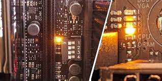

CPU Indicating Lights
Modern CPUs often include various indicating lights or light-emitting diodes (LEDs) that provide visual feedback on the status and operation of the CPU. These indicating lights can be useful for troubleshooting, debugging, and monitoring the performance of the CPU.
Common CPU Indicating Lights
The specific indicating lights present on a CPU can vary depending on the manufacturer and model. However, some common indicating lights found on CPUs include:
- Power LED: The power LED indicates whether the CPU is receiving power. It is usually green when the CPU is powered on and off when the CPU is powered off or in a standby state.
- Activity LED: The activity LED, also known as the processing LED, flashes or blinks to indicate that the CPU is actively processing instructions and data. The frequency or pattern of the blinking can provide information about the CPU's current workload or activity level.
- Error LED: The error LED is typically red or amber in color and indicates that an error or fault has occurred within the CPU. This could be related to overheating, hardware failures, or other critical issues that require immediate attention.
- Debug LEDs: Some CPUs, especially those used in development or testing environments, may include additional debug LEDs that provide more detailed information about the CPU's internal state or operation. These LEDs can display binary or hexadecimal codes that can be used by engineers or technicians to diagnose and troubleshoot issues.

Interpreting CPU Indicating Lights
The specific meaning and interpretation of the CPU indicating lights can vary depending on the manufacturer and model. It is essential to refer to the CPU's documentation or user manual to understand the exact meaning of each LED and the patterns or codes they display.
In general, a solid or blinking green power LED indicates that the CPU is receiving power and is operational. A blinking activity LED can indicate normal processing activity, while a rapidly flashing or solid activity LED may suggest a high workload or potential issues. A red or amber error LED typically indicates a critical error or fault that requires immediate attention.
Debug LEDs or more advanced LED displays may require decoding the binary or hexadecimal codes displayed to understand the specific internal state or error condition of the CPU.
Importance of CPU Indicating Lights
CPU indicating lights serve several important purposes in computer systems:
- Troubleshooting and Diagnostics: The indicating lights can provide valuable information for diagnosing and troubleshooting issues with the CPU. For example, a solid error LED can quickly indicate that there is a problem with the CPU that needs to be addressed.
- Performance Monitoring: The activity LED can provide a visual representation of the CPU's current workload or processing activity, which can be useful for monitoring performance and identifying potential bottlenecks or overloading.
- System Status Feedback: The power LED can provide a quick visual indication of whether the CPU is powered on or in a standby state, which can be helpful for users or technicians when working with the system.
- Debug and Development: Debug LEDs or advanced LED displays can be invaluable tools for engineers or developers working on CPU design, testing, or software development. These LEDs can provide detailed information about the internal state and operation of the CPU, allowing for more effective debugging and optimization.
While CPU indicating lights may seem simple, they play a crucial role in providing valuable feedback and information about the CPU's status and operation, which can enhance troubleshooting, monitoring, and overall system reliability.